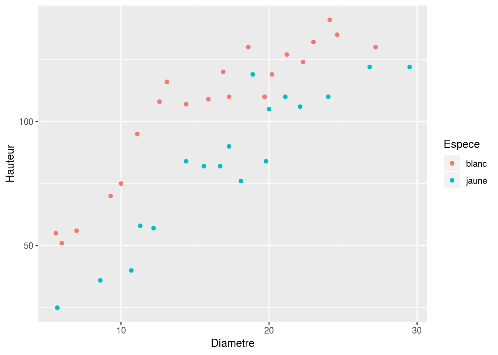
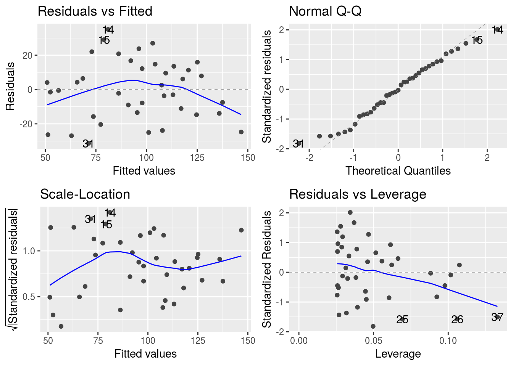
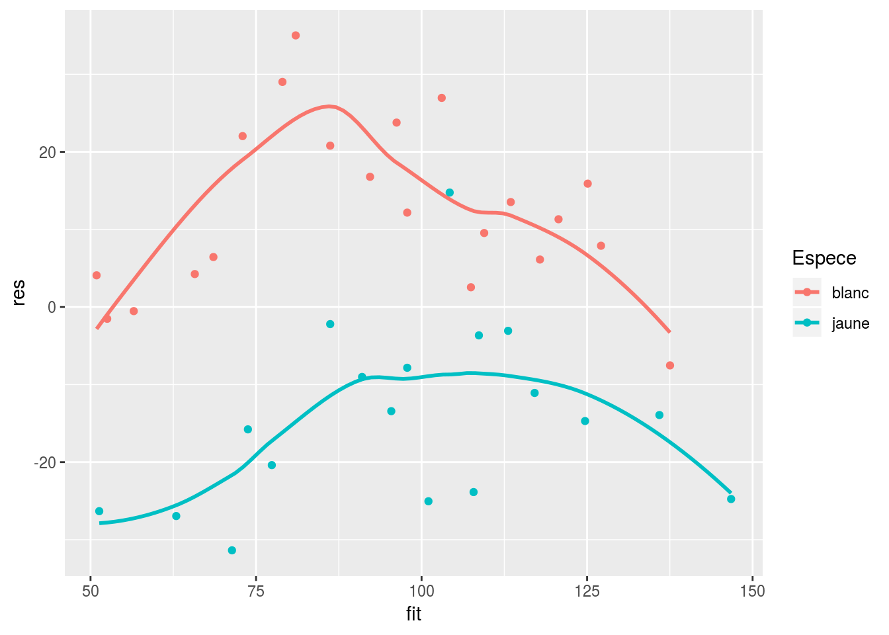
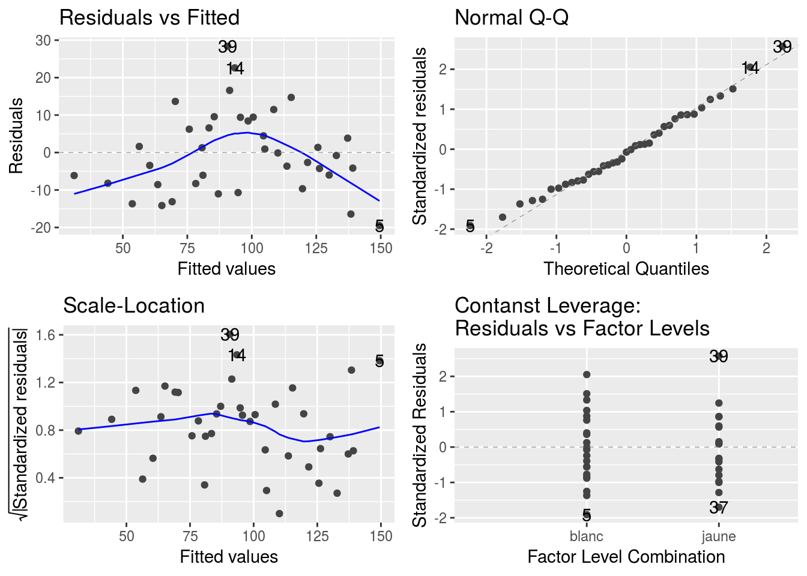

Analyse de la covariance
On souhaite étudier la hauteur de pins en fonction de leur diamètre. Les données comportent deux variétés de pins, des jaunes et des blancs.
Données observées
pin=read.table('data/Pin.txt',header=T)
head(pin,10)## Espece Diametre Hauteur
## 1 blanc 21.2 127
## 2 blanc 20.2 119
## 3 blanc 24.6 135
## 4 blanc 23.0 132
## 5 blanc 27.2 130
## 6 blanc 18.6 130
## 7 blanc 17.3 110
## 8 blanc 10.0 75
## 9 blanc 19.7 110
## 10 blanc 22.3 124dim(pin)## [1] 39 3summary(pin)## Espece Diametre Hauteur
## blanc:21 Min. : 5.60 Min. : 25.00
## jaune:18 1st Qu.:11.75 1st Qu.: 75.50
## Median :17.30 Median :107.00
## Mean :16.74 Mean : 95.59
## 3rd Qu.:21.15 3rd Qu.:119.50
## Max. :29.50 Max. :141.00pin %>% filter(Espece == 'blanc') %>% summary## Espece Diametre Hauteur
## blanc:21 Min. : 5.6 Min. : 51.0
## jaune: 0 1st Qu.:11.1 1st Qu.: 95.0
## Median :16.9 Median :110.0
## Mean :16.2 Mean :105.7
## 3rd Qu.:21.2 3rd Qu.:127.0
## Max. :27.2 Max. :141.0pin %>% filter(Espece == 'jaune') %>% summary## Espece Diametre Hauteur
## blanc: 0 Min. : 5.70 Min. : 25.00
## jaune:18 1st Qu.:12.75 1st Qu.: 62.50
## Median :17.70 Median : 84.00
## Mean :17.38 Mean : 83.78
## 3rd Qu.:20.82 3rd Qu.:109.00
## Max. :29.50 Max. :122.00ggplot(pin, aes(x=Diametre, y = Hauteur, col = Espece)) + geom_point()
Régression linéaire simple
reglin=lm(Hauteur~Diametre,data=pin)
autoplot(reglin)
summary(reglin)##
## Call:
## lm(formula = Hauteur ~ Diametre, data = pin)
##
## Residuals:
## Min 1Q Median 3Q Max
## -31.37 -13.68 -0.53 12.85 35.01
##
## Coefficients:
## Estimate Std. Error t value Pr(>|t|)
## (Intercept) 28.4607 8.1162 3.507 0.00121 **
## Diametre 4.0099 0.4543 8.826 1.23e-10 ***
## ---
## Signif. codes: 0 '***' 0.001 '**' 0.01 '*' 0.05 '.' 0.1 ' ' 1
##
## Residual standard error: 17.69 on 37 degrees of freedom
## Multiple R-squared: 0.678, Adjusted R-squared: 0.6693
## F-statistic: 77.9 on 1 and 37 DF, p-value: 1.23e-10graphe des residus en fonction de la variete
df <- pin %>% mutate(fit = fitted(reglin), res= residuals(reglin))
ggplot(df, aes(x=fit, y=res, col=Espece)) + geom_point() + geom_smooth(stat='smooth', se = FALSE)## `geom_smooth()` using method = 'loess' and formula 'y ~ x'
Regressions linéaires par variété
On pourrait tenter de faire une regression par espèce mais on ne pourra pas comparer les variétés.
Modèle d’analyse de la covariance
modancova <- lm(Hauteur~Diametre+Espece+Diametre:Espece,data=pin)
autoplot(modancova)
summary(modancova)##
## Call:
## lm(formula = Hauteur ~ Diametre + Espece + Diametre:Espece, data = pin)
##
## Residuals:
## Min 1Q Median 3Q Max
## -19.5014 -8.2424 -0.7899 7.5008 28.3598
##
## Coefficients:
## Estimate Std. Error t value Pr(>|t|)
## (Intercept) 41.2747 6.8238 6.049 6.66e-07 ***
## Diametre 3.9789 0.3926 10.136 5.95e-12 ***
## Especejaune -35.8390 10.5955 -3.382 0.00178 **
## Diametre:Especejaune 0.5293 0.5899 0.897 0.37572
## ---
## Signif. codes: 0 '***' 0.001 '**' 0.01 '*' 0.05 '.' 0.1 ' ' 1
##
## Residual standard error: 11.36 on 35 degrees of freedom
## Multiple R-squared: 0.8744, Adjusted R-squared: 0.8637
## F-statistic: 81.25 on 3 and 35 DF, p-value: 7.69e-16anova(modancova)## Analysis of Variance Table
##
## Response: Hauteur
## Df Sum Sq Mean Sq F value Pr(>F)
## Diametre 1 24379.7 24379.7 188.9777 1.133e-15 ***
## Espece 1 6960.6 6960.6 53.9542 1.377e-08 ***
## Diametre:Espece 1 103.9 103.9 0.8051 0.3757
## Residuals 35 4515.3 129.0
## ---
## Signif. codes: 0 '***' 0.001 '**' 0.01 '*' 0.05 '.' 0.1 ' ' 1Anova(modancova)## Anova Table (Type II tests)
##
## Response: Hauteur
## Sum Sq Df F value Pr(>F)
## Diametre 26676.2 1 206.7790 2.952e-16 ***
## Espece 6960.6 1 53.9542 1.377e-08 ***
## Diametre:Espece 103.9 1 0.8051 0.3757
## Residuals 4515.3 35
## ---
## Signif. codes: 0 '***' 0.001 '**' 0.01 '*' 0.05 '.' 0.1 ' ' 1Quelles conséquences si on enlève l’interaction ?
Moyennes ajustées
emmeans(modancova, pairwise~Espece,adjust="none")## NOTE: Results may be misleading due to involvement in interactions## $emmeans
## Espece emmean SE df lower.CL upper.CL
## blanc 107.88593 2.487804 35 102.83542 112.93644
## jaune 80.90719 2.691789 35 75.44257 86.37181
##
## Confidence level used: 0.95
##
## $contrasts
## contrast estimate SE df t.ratio p.value
## blanc - jaune 26.97874 3.665364 35 7.36 <.0001code chunk number 6: pin.Rnw:93-97
graphe des residus en fonction de la variete
plot(fitted(modancova),residuals(modancova),pch=8+tp) legend(“topright”,legend = c(“blanc”,“jaune”),pch=c(8,17)) abline(0,0,lty=2)
code chunk number 7: pin.Rnw:103-111
modancsI=lm(Hauteur~Diametre+Espece,data=pin) summary(modancsI) anova(modancsI)
Anova(modancsI)
par(mfrow=c(2,2)) plot(modancsI)
\end{verbatim}
\end{document}
R Markdown
This is an R Markdown document. Markdown is a simple formatting syntax for authoring HTML, PDF, and MS Word documents. For more details on using R Markdown see http://rmarkdown.rstudio.com.
When you click the Knit button a document will be generated that includes both content as well as the output of any embedded R code chunks within the document. You can embed an R code chunk like this:
summary(cars)## speed dist
## Min. : 4.0 Min. : 2.00
## 1st Qu.:12.0 1st Qu.: 26.00
## Median :15.0 Median : 36.00
## Mean :15.4 Mean : 42.98
## 3rd Qu.:19.0 3rd Qu.: 56.00
## Max. :25.0 Max. :120.00Including Plots
You can also embed plots, for example:

Note that the echo = FALSE parameter was added to the code chunk to prevent printing of the R code that generated the plot.